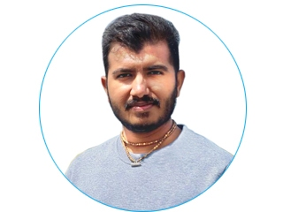
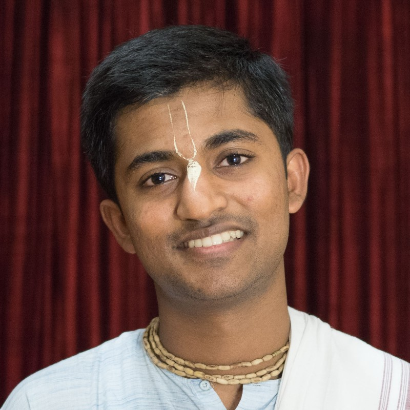
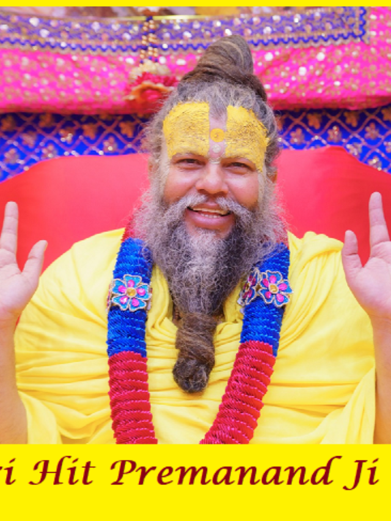

People who influenced me
Top 3 role models of Yuvraj
1.Prateek Prajapati Prabhu
- A sincere and hardworking devotee with a strong vision and aim.
- His actions are inspiring for all the young generations to be disciplined and dedicated in our ultimate path.
- His work pushes us to not to be ordinary.
- He has built a Free library named as "Veducation" ,it's available on playstore where you have access to all scriptures covering each and everyhting from yoga,ayurveda,cosmology,history etc. at free of cost.

2.Amarendra Dasa Prabhu
- A gifted personality , a true ,simple, sincere yet extraordinary devotee.
- A humble personality, an excellent student both in spiritual and as well as material education .
- He is a soulful singer, a beautiful kathavachak with an ability to be able to melt the heart of listeners with the beautiful pastimes of Shri Krishna.

3. Shri Hit Premanand Ji Maharaj
- A true saint sent by my RadhaKrishna to guide fallen souls like us,a warrior whose words can penetrate the minds of even the most sinful people.
